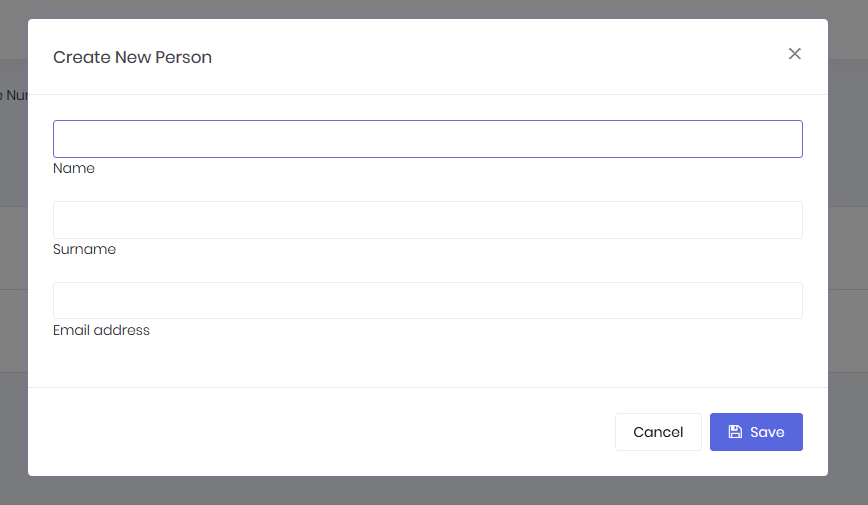
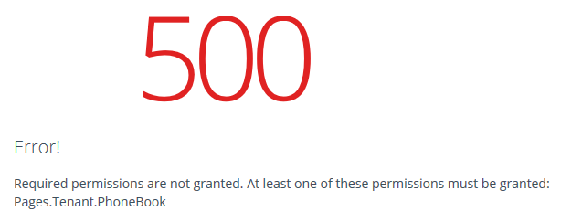
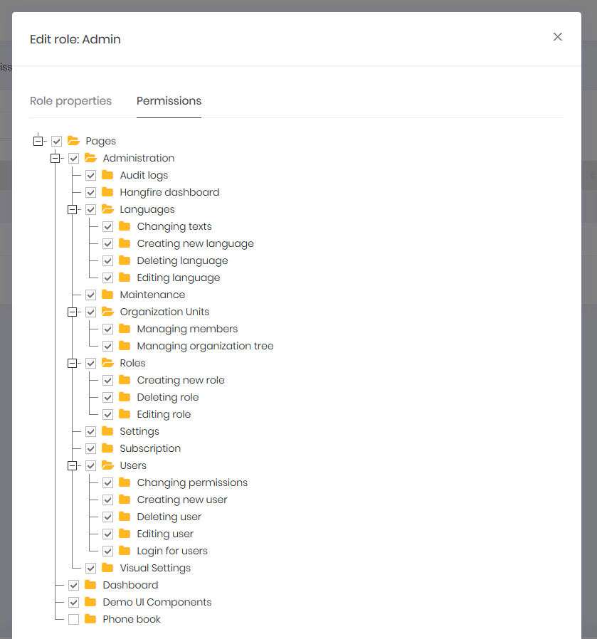
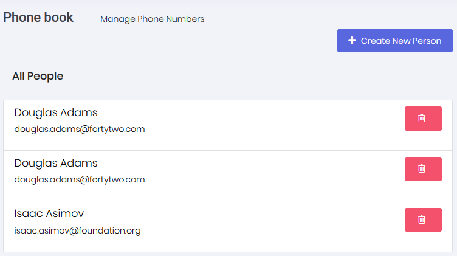
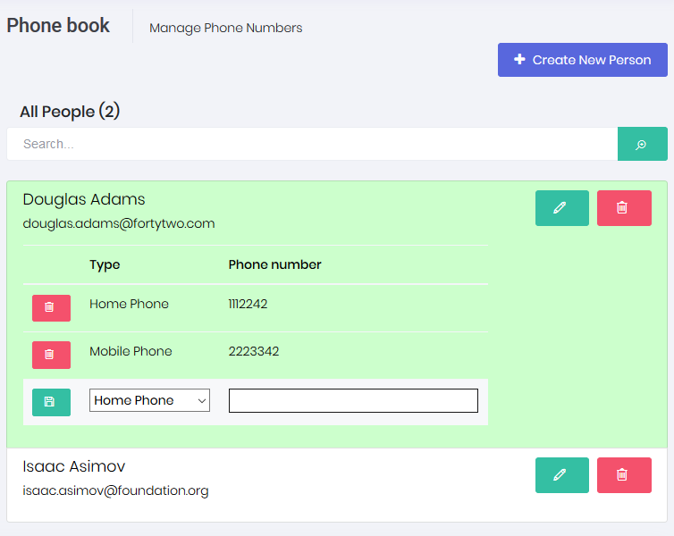
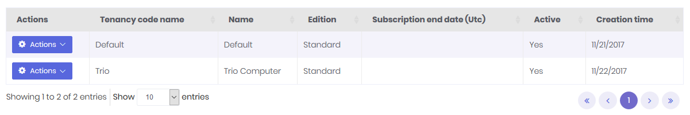
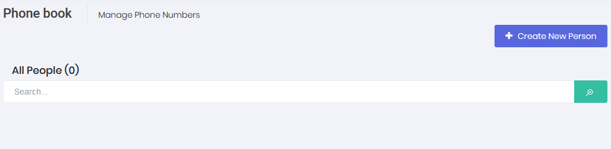

In this document, we will create a sample phonebook application based on ASP.NET Zero (ASP.NET Core version) step by step. After all steps, we will have a multi-tenant, localized, authorized, configurable, testable... application.
We're creating and downloading the solution named "Acme.PhoneBookDemo" as described in Getting Started document. After opening solution in Visual Studio, we see an NLayered solution that consists of eight projects:
Also, run database migrations, create the database and login to the application as described in Getting Started document. After all completed and logged in to the application, we see a dashboard as shown below:

Logout from the application for now. We will make our application single-tenant (we will convert it to multi-tenant later). So, we open PhoneBookDemoConsts class in the Acme.PhoneBookDemo.Core project and disable multi-tenancy as shown below:
public class PhoneBookDemoConsts
{
public const string LocalizationSourceName = "PhoneBookDemo";
public const string ConnectionStringName = "Default";
public const bool MultiTenancyEnabled = false;
public const int PaymentCacheDurationInMinutes = 30;
}
Let's begin from UI and create a new page named "Phone book".
AppNavigationProvider class defines menus in the application. When we change this class, menus are automatically changed. Open this class and create new menu item as shown below (You can add it right after the dashboard menu item).
.AddItem(new MenuItemDefinition(
AppPageNames.Tenant.PhoneBook,
L("PhoneBook"),
url: "App/PhoneBook",
icon: "glyphicon glyphicon-book"
)
)
Every menu item must have a unique name to identify this menu item. Menu names are defined in AppPageNames class as constants. We add a new constant: "PhoneBook".
A menu item should also have a localizable shown name. It's used to display menu item on the page. L("PhoneBook") is localized name of our new menu. L method is a helper method gets a localization key and simply returns a LocalizableString object (see AppNavigationProvider class).
Localization strings are defined in XML files in .Core project as shown below:

Open PhoneBook.xml (the default, English localization dictionary) and add the following line:
<text name="PhoneBook">Phone book</text>
If we don't define "PhoneBook"s value for other localization dictionaries, default value is shown in all languages. We can define it also for Turkish in PhoneBook-tr.xml file:
<text name="PhoneBook">Telefon Rehberi</text>
url can be a URL (it's URL of an MVC Action here) that will be redirected when we click the menu item.
Lastly, icon is the shown menu icon for new menu item. It can be a css class. We can use Glyphicon, Font-Awesome or another css font library here.
See navigation document for more information on menu definitions.
After creating the menu item, we can create an empty page.
Creating the PhoneBookController under Areas/App/Controllers folder in the Web project:
[Area("App")]
public class PhoneBookController : PhoneBookDemoControllerBase
{
public ActionResult Index()
{
return View();
}
}
We inherited from PhoneBookDemoControllerBase (will be YourProjectNameControllerBase for your projects) instead of MVC's standard Controller class. While it will work if we derive from the standard Controller, PhoneBookDemoControllerBase provides very useful base properties and methods. So, always inherit from this class unless it has a disadvantage for your case.
Creating an empty view, Index.cshtml under Areas/App/Views/PhoneBook folder:
@using System.Threading.Tasks
@using Acme.PhoneBookDemo.Web.Areas.App.Startup
@{
ViewBag.CurrentPageName = AppPageNames.Tenant.PhoneBook;
}
<div class="m-subheader">
<div class="d-flex align-items-center">
<div class="mr-auto">
<h3 class="m-subheader__title m-subheader__title--separator">
<span>@L("PhoneBook")</span>
</h3>
<span class="m-section__sub">
@L("PhoneBookInfo")
</span>
</div>
</div>
</div>
<div class="m-content">
<p>PHONE BOOK CONTENT COMES HERE!</p>
</div>
We set ViewBag.CurrentPageName to the current page's name to automatically highlight the related menu item when this page is active. Now, it's time to run application and see the new phone book page:

Menu item display name and page title are localized. Try to change UI language to see difference.
We define entities in .Core (domain) project. We can define a Person entity (mapped to PbPersons table in database) to represent a person in phone book as shown below:
[Table("PbPersons")]
public class Person : FullAuditedEntity
{
[Required]
[MaxLength(PersonConsts.MaxNameLength)]
public virtual string Name { get; set; }
[Required]
[MaxLength(PersonConsts.MaxSurnameLength)]
public virtual string Surname { get; set; }
[MaxLength(PersonConsts.MaxEmailAddressLength)]
public virtual string EmailAddress { get; set; }
}
Person's primary key type is int (as default). It inherits FullAuditedEntity that contains creation, modification and deletion audit properties. It's also soft-delete. When we delete a person, it's not deleted by database but marked as deleted (see entity and data filters documentations for more information). We created PersonConsts in Core.Shared project for MaxLength properties. This is a good practice since we will use same values later.
public class PersonConsts
{
public const int MaxNameLength = 32;
public const int MaxSurnameLength = 32;
public const int MaxEmailAddressLength = 255;
}
We add a DbSet property for Person entity to PhoneBookDemoDbContext class defined in .EntityFrameworkCore project.
public class PhoneBookDemoDbContext : AbpZeroDbContext<Tenant, Role, User>
{
public virtual DbSet<Person> Persons { get; set; }
//...other entities
public PhoneBookDemoDbContext()
: base("Default")
{
}
//...other codes
}
We use EntityFramework Code-First migrations to migrate database schema. Since we added Person entitiy, our DbContext model is changed. So, we should create a new migration to create the new table in the database.
Open Package Manager Console, run the Add-Migration "Added_Persons_Table" command as shown below:

This command will add a migration class named "Added_Persons_Table" as shown below:
public partial class Added_Persons_Table : Migration
{
protected override void Up(MigrationBuilder migrationBuilder)
{
migrationBuilder.CreateTable(
name: "PbPersons",
columns: table => new
{
Id = table.Column(nullable: false)
.Annotation("SqlServer:ValueGenerationStrategy", SqlServerValueGenerationStrategy.IdentityColumn),
CreationTime = table.Column(nullable: false),
CreatorUserId = table.Column(nullable: true),
DeleterUserId = table.Column(nullable: true),
DeletionTime = table.Column(nullable: true),
EmailAddress = table.Column(maxLength: 255, nullable: true),
IsDeleted = table.Column(nullable: false),
LastModificationTime = table.Column(nullable: true),
LastModifierUserId = table.Column(nullable: true),
Name = table.Column(maxLength: 32, nullable: false),
Surname = table.Column(maxLength: 32, nullable: false)
},
constraints: table =>
{
table.PrimaryKey("PK_PbPersons", x => x.Id);
});
}
protected override void Down(MigrationBuilder migrationBuilder)
{
migrationBuilder.DropTable(
name: "PbPersons");
}
}
We don't have to know so much about format and rules of this file. But, it's suggested to have a basic understanding of migrations. In the same Package Manager Console, we write Update-Database command in order to apply the new migration to database. After updating, we can see that PbPersons table is added to database.

But this new table is empty. In ASP.NET Zero, there are some classes to fill initial data for users and settings:

So, we can add a seperated class to fill some people to database as shown below:
namespace Acme.PhoneBookDemo.Migrations.Seed.Host
{
public class InitialPeopleCreator
{
private readonly PhoneBookDemoDbContext _context;
public InitialPeopleCreator(PhoneBookDemoDbContext context)
{
_context = context;
}
public void Create()
{
var douglas = _context.Persons.FirstOrDefault(p => p.EmailAddress == "douglas.adams@fortytwo.com");
if (douglas == null)
{
_context.Persons.Add(
new Person
{
Name = "Douglas",
Surname = "Adams",
EmailAddress = "douglas.adams@fortytwo.com"
});
}
var asimov = _context.Persons.FirstOrDefault(p => p.EmailAddress == "isaac.asimov@foundation.org");
if (asimov == null)
{
_context.Persons.Add(
new Person
{
Name = "Isaac",
Surname = "Asimov",
EmailAddress = "isaac.asimov@foundation.org"
});
}
}
}
}
These type of default data is good since we can also use these data in unit tests. Surely, we should be careful about seed data since this code will always be executed in each PostInitialize of your PhoneBookEntityFrameworkCoreModule. This class (InitialPeopleCreator) is created and called in InitialHostDbBuilder class. This is not so important, just for a good code organization (see source codes).
public class InitialHostDbBuilder
{
//existing codes...
public void Create()
{
//existing codes...
new InitialPeopleCreator(_context).Create();
_context.SaveChanges();
}
}
We run our project again, it runs seed and adds two people to PbPersons table:

An Application Service is used from client (presentation layer) to perform operations (use cases) in the application.
Application services are located in .Application project and their interfaces are located in Application.Shared project. We create first application service to get people from server. We're creating an interface to define the person application service (while this interface is optional, we suggest you to create it):
public interface IPersonAppService : IApplicationService
{
ListResultDto<PersonListDto> GetPeople(GetPeopleInput input);
}
An application service method gets/returns DTOs. We Place them in Application.Shared project. ListResultDto is a pre-build helper DTO to return a list of another DTO. GetPeopleInput is a DTO to pass request parameters to GetPeople method. So, GetPeopleIntput and PersonListDto are defined as shown below:
public class GetPeopleInput
{
public string Filter { get; set; }
}
[AutoMapFrom(typeof(Person))]
public class PersonListDto : FullAuditedEntityDto
{
public string Name { get; set; }
public string Surname { get; set; }
public string EmailAddress { get; set; }
}
AutoMapFrom attribute is used to configure AutoMapper to create mapping from Person to PersonListDto. FullAuditedEntityDto used to inherit audit properties automatically. See application service and DTO documentations for more information.
After defining interface, we can implement it as shown below:
public class PersonAppService : PhoneBookDemoAppServiceBase, IPersonAppService
{
private readonly IRepository<Person> _personRepository;
public PersonAppService(IRepository<Person> personRepository)
{
_personRepository = personRepository;
}
public ListResultDto<PersonListDto> GetPeople(GetPeopleInput input)
{
var persons = _personRepository
.GetAll()
.WhereIf(
!input.Filter.IsNullOrEmpty(),
p => p.Name.Contains(input.Filter) ||
p.Surname.Contains(input.Filter) ||
p.EmailAddress.Contains(input.Filter)
)
.OrderBy(p => p.Name)
.ThenBy(p => p.Surname)
.ToList();
return new ListResultDto<PersonListDto>(ObjectMapper.Map<List<PersonListDto>>(persons));
}
}
We're injecting person repository (it's automatically created by ABP) and using it to filter and get people from database.
WhereIf is an extension method here (defined in Abp.Linq.Extensions namespace). It performs Where condition, only if filter is not null or empty. IsNullOrEmpty is also an extension method (defined in Abp.Extensions namespace). ABP has many similar shortcut extension methods. MapTo method automatically converts list of Person entities to list of PersonListDto entities using AutoMapper library.
We don't manually open database connection or start/commit transactions manually. It's automatically done with ABP framework's Unit Of Work system. See UOW documentation for more.
We don't handle exceptions manually (using a try-catch block). Because ABP framework automatically handles all exceptions on the web layer and returns appropriate error messages to the client. It then handles errors on the client and shows needed error information to the user. See exception handling document for more.
You can skip this section if you don't interest in automated testing.
By writing unit test, we can test PersonAppService.GetPeople method without creating a user interface that calls it and shows people on the screen.
We write unit test in .Tests project in the solution. Let's create first test to verify getting people without any filter:
public class PersonAppService_Tests : AppTestBase
{
private readonly IPersonAppService _personAppService;
public PersonAppService_Tests()
{
_personAppService = Resolve<IPersonAppService>();
}
[Fact]
public void Should_Get_All_People_Without_Any_Filter()
{
//Act
var persons = _personAppService.GetPeople(new GetPeopleInput());
//Assert
persons.Items.Count.ShouldBe(2);
}
}
We derived test class from AppTestBase. AppTestBase class initializes all system, creates an in-memory fake database, seeds initial data (that we created before) to database and logins to application as admin. So, this is actually an integration test since it tests all server-side codes from entitiy framework mapping to application services, validation and authorization.
In constructor, we get (resolve) an IPersonAppService from dependency injection container. It creates the PersonAppService class with all dependencies. Then we can use it in test methods.
Since we're using xUnit, we add Fact attribute to each test method. In the test method, we called GetPeople method and checked if there are two people in the returned list as we know that there were 2 people in initial database.
Let's run the all unit tests in Test Explorer and see if it works:

As you see, it worked successfully. Now, we know that PersonAppService works properly without any filter. Let's add a new unit test to get filtered people:
[Fact]
public void Should_Get_People_With_Filter()
{
//Act
var persons = _personAppService.GetPeople(
new GetPeopleInput
{
Filter = "adams"
});
//Assert
persons.Items.Count.ShouldBe(1);
persons.Items[0].Name.ShouldBe("Douglas");
persons.Items[0].Surname.ShouldBe("Adams");
}
Again, since we know initial database, we can check returned results easily. Here, initial test data is important. When we change initial data, our test may fail even if our services are correct. So, it's better to write unit tests independed of initial data as much as possible. We could check incoming data to see if every people contains "adams" in his/her name, surname or email. Thus, if we add new people to initial data, our tests remain working.
There are many techniques on unit testing, I kept it simple here. But ASP.NET Zero template makes very easy to write unit and integration tests by base classes and pre-build test codes.
Now, lets run and login to the application again, open Chrome Developer Console (or similar tools in other browsers) and write the following command:

This command performs an AJAX call to PersonAppService.GetPeople method. We can see the request if we open Network tab:

As we see, an AJAX request made and people are got successfully.
So, how this happen? How we could make a call to a C# class method (notice that it's not an MVC Controller, just a plain C# class) from javascript like calling a javascript method? This is provided by ASP.NET Boilerplate. See AspNet Core documentation for more information. You can always call application services from console to debug or see returned JSON structure.
We can also check Audit Logs to see the request. Open AbpAuditLogs table in PhoneBook database to see the call information:

There are some other fields not shown here. So, we see that User with Id=2 called GetPeople method of the PersonAppService in recorded time with the shown parameters and it's executed in 134 ms.
It's time to open PhoneBookController and get people to show on the view:
[Area("App")]
public class PhoneBookController : PhoneBookDemoControllerBase
{
private readonly IPersonAppService _personAppService;
public PhoneBookController(IPersonAppService personAppService)
{
_personAppService = personAppService;
}
public ActionResult Index(GetPeopleInput input)
{
var output = _personAppService.GetPeople(input);
var model = new IndexViewModel(output);
return View(model);
}
}
We inject IPersonAppService and call it's GetPeople method (which is created and tested before) to get list of people. Then we created a ViewModel object and passes to the view. Let's see the IndexViewModel class:
[AutoMapFrom(typeof (ListResultDto<PersonListDto>))]
public class IndexViewModel : ListResultDto<PersonListDto>
{
public IndexViewModel(ListResultDto<PersonListDto> output)
{
output.MapTo(this);
}
}
Here, we're extending output of PersonAppService.GetPeople method's output. Getting the output from constructor and map to this object. We declared AutoMapFrom attribute to be able to make mapping.
We created an Application Service (PersonAppService) and used it from the Controller. Instead, we could access Repository directly from Controller and completely discard the application service. AspNet Zero does not enforce any architecture here. In AspNet Zero, we use the application layer (application services and DTOs). Therefore, we implemented it independent from ASP.NET MVC. This makes application layer re-usable from different presentation layers. But if you will only develop ASP.NET MVC, you can implement application logic inside controllers and access to the repositories from controllers. This may simplify your architecture and development model.
If you decide to develop application services and use them in controllers then you can use application service's output as your view model. We did not prefer it and wrapped output by a dedicated ViewModel (IndexViewModel here) since we think that we may add some additional properties/methods for our view model. Again, it's your choice of implementation.
We show people on the page is most basic form. See the changed view below:
...
@model Acme.PhoneBookDemo.Web.Areas.App.Models.PhoneBook.IndexViewModel
...
<h5 class="m-subheader__title m-subheader">@L("AllPeople")</h5>
<div class="list-group">
@foreach (var person in Model.Items)
{
<a href="javascript:;" style="color: black" class="list-group-item">
<h5 class="list-group-item-heading" style="font-weight: lighter">
@person.Name @person.Surname
</h5>
<p class="list-group-item-text">
@person.EmailAddress
</p>
</a>
}
</div>
...
We declared the @model and used a foreach loop to render people. See the result:

We successfully retrieved list of people from database to the page.
We normally use a javascript based rich table/grid library to show tabular data, instead of manually rendering data like that. For example, we used to use jTable library to show users on the Users page of AspNet Zero. Always use such components since they make things much more easier and provides a much better user experience.
We did not use a table component here, because we want to show basics of MVC instead of going details of a 3rd party library.
Next step is to create a modal to add a new item to phone book.
We first define CreatePerson method in IPersonAppService interface:
Task CreatePerson(CreatePersonInput input);
Then we create CreatePersonInput DTO that defines parameters of the method:
[AutoMapTo(typeof(Person))]
public class CreatePersonInput
{
[Required]
[MaxLength(PersonConsts..MaxNameLength)]
public string Name { get; set; }
[Required]
[MaxLength(PersonConsts..MaxSurnameLength)]
public string Surname { get; set; }
[EmailAddress]
[MaxLength(PersonConsts..MaxEmailAddressLength)]
public string EmailAddress { get; set; }
}
CreatePersonInput is mapped to Person entity (we will use mapping below). All properties are decorated by data annotation attributes to provide automatic validation. Notice that we use same consts defined in Person entity for MaxLength properties.
Here, the implementation of CreatePerson method:
public async Task CreatePerson(CreatePersonInput input)
{
var person = ObjectMapper.Map<Person>(input);
await _personRepository.InsertAsync(person);
}
A Person entity is created by mapping given input, then inserted to database. We used async/await pattern here. All methods in ASP.NET Zero startup project is async. It's adviced to use async/await wherever possible.
You can skip this section if you don't interest in automated testing.
We can create a unit test method to test CreatePerson method as shown below:
[Fact]
public async Task Should_Create_Person_With_Valid_Arguments()
{
//Act
await _personAppService.CreatePerson(
new CreatePersonInput
{
Name = "John",
Surname = "Nash",
EmailAddress = "john.nash@abeautifulmind.com"
});
//Assert
UsingDbContext(
context =>
{
var john = context.Persons.FirstOrDefault(p => p.EmailAddress == "john.nash@abeautifulmind.com");
john.ShouldNotBe(null);
john.Name.ShouldBe("John");
});
}
Test method also written using async/await pattern since calling method is async. We called CreatePerson method, then checked if given person is in the database. UsingDbContext method is a helper method of AppTestBase class (which we inherited this unit test class from). It's used to easily get a reference to DbContext and use it directly to perform database operations.
This method successfully works since all required fields are supplied. Let's try to create a test for invalid arguments:
[Fact]
public async Task Should_Not_Create_Person_With_Invalid_Arguments()
{
//Act and Assert
await Assert.ThrowsAsync<AbpValidationException>(
async () =>
{
await _personAppService.CreatePerson(
new CreatePersonInput
{
Name = "John"
});
});
}
We did not set Surname property of CreatePersonInput despite of it's required. So, it throws AbpValidationException automatically. Also, we can not send null to CreatePerson method since validation system also checks it. This test calls CreatePerson with invalid arguments and asserts that it thows AbpValidationException. See validation document for more information.
We will create a Bootstrap Modal to create a new person. First of all, you can create modal and save as you already know and like. But AspNet Zero has some helper scripts to make it easier if you use it. We will use them here.
We can copy cshtml and js files from Areas/App/Views/Common/Modals/Empty folder as a base for a new modal to Areas/App/Views/PhoneBook/_CreatePersonModal.cshtml.
Copied and modifined the view code as shown below (_CreatePersonModal.cshtml):
@using Acme.PhoneBookDemo.People
@using Acme.PhoneBookDemo.Web.Areas.App.Models.Common.Modals
@Html.Partial("~/Areas/App/Views/Common/Modals/_ModalHeader.cshtml", new ModalHeaderViewModel(L("CreateNewPerson")))
<div class="modal-body">
<form role="form" novalidate class="form-validation">
<div class="form-group form-md-line-input form-md-floating-label no-hint">
<input class="form-control" type="text" name="Name" required maxlength="@PersonConsts.MaxNameLength">
<label>@L("Name")</label>
</div>
<div class="form-group form-md-line-input form-md-floating-label no-hint">
<input type="text" name="Surname" class="form-control" required maxlength="@PersonConsts.MaxSurnameLength">
<label>@L("Surname")</label>
</div>
<div class="form-group form-md-line-input form-md-floating-label no-hint">
<input type="email" name="EmailAddress" class="form-control" maxlength="@PersonConsts.MaxEmailAddressLength">
<label>@L("EmailAddress")</label>
</div>
</form>
</div>
@Html.Partial("~/Areas/App/Views/Common/Modals/_ModalFooterWithSaveAndCancel.cshtml")
Modal header and footer code comes from the template. We just changed inside of modal-body.
We have a form with three input (name, surname and email address). We're using Person entity's const values in view to set same maxlength to input controls.
Also, copied the _Empty.js from view-resources/Areas/App/Views/Common/Modals/Empty to view-resources/Areas/App/Views/PhoneBook and modified as shown below (_CreatePersonModal.js):
(function($) {
app.modals.CreatePersonModal = function () {
var _modalManager;
this.init = function(modalManager) {
_modalManager = modalManager;
//Initialize your modal here...
};
this.save = function () {
//Save your modal here...
};
};
})(jQuery);
Just named the modal as 'CreatePersonModal'. We will fill the javascript code later.
We need to put a "Create new person" button to the 'people list page' and write some javascript code to open the modal when clicked to the button.
So, changing the Index.cshtml view header as shown below:
@using System.Threading.Tasks
@using Acme.PhoneBook.Web.Areas.App.Startup
@model Acme.PhoneBook.Web.Areas.App.Models.PhoneBook.IndexViewModel
@{
ViewBag.CurrentPageName = AppPageNames.Tenant.PhoneBook;
}
@section Scripts
{
<environment names="Development">
<script src="~/view-resources/Areas/App/Views/PhoneBook/_CreatePersonModal.js" asp-append-version="true"></script>
<script src="~/view-resources/Areas/App/Views/PhoneBook/Index.js" asp-append-version="true"></script>
</environment>
}
<div class="row margin-bottom-5">
<div class="col-xs-6">
<div class="page-head">
<div class="page-title">
<h1>
<span>@L("PhoneBook")</span>
</h1>
</div>
</div>
</div>
<div class="col-xs-6 text-right">
<button id="CreateNewPersonButton" class="btn btn-primary"><i class="fa fa-plus"></i> @L("CreateNewPerson")</button>
</div>
</div>
<div class="portlet light">
<div class="portlet-body">
<h3>@L("AllPeople")</h3>
<div class="list-group">
@foreach (var person in Model.Items)
{
<a href="javascript:;" class="list-group-item">
<h4 class="list-group-item-heading">
@person.Name @person.Surname
</h4>
<p class="list-group-item-text">
@person.EmailAddress
</p>
</a>
}
</div>
</div>
</div>
We included modal's javascript (_CreatePersonModal.js) and a Index.js file which is defined as shown below:
(function () {
var _createPersonModal = new app.ModalManager({
viewUrl: abp.appPath + 'App/PhoneBook/CreatePersonModal',
scriptUrl: abp.appPath + 'view-resources/Areas/App/Views/PhoneBook/_CreatePersonModal.js',
modalClass: 'CreatePersonModal'
});
$('#CreateNewPersonButton').click(function (e) {
e.preventDefault();
_createPersonModal.open();
});
})();
ModalManager is a predefined modal helper javascript class of AspNet Zero. It accepts a viewUrl (which is actually an MVC action to load the view), a scriptUrl (javascript file of the modal) and a modalClass (which is set when we define the modal above).
ModalManager's open method loads view and javascript (if needed) and opens the modal.
Lastly, we should create the MVC action defined as App/PhoneBook/CreatePersonModal. So, open the PhoneBookController again and add the following action:
public PartialViewResult CreatePersonModal()
{
return PartialView("_CreatePersonModal");
}
Now, we can run the application and open the modal by clicking the 'Create New Person' button:

Finally, we can save the person when user clicks the the save button. We implement it in the _CreatePersonModal.js file:
(function($) {
app.modals.CreatePersonModal = function () {
var _modalManager;
var _personService = abp.services.app.person;
var _$form = null;
this.init = function(modalManager) {
_modalManager = modalManager;
_$form = _modalManager.getModal().find('form');
_$form.validate();
};
this.save = function () {
if (!_$form.valid()) {
return;
}
var person = _$form.serializeFormToObject();
_modalManager.setBusy(true);
_personService.createPerson(person).done(function () {
_modalManager.close();
location.reload();
}).always(function () {
_modalManager.setBusy(false);
});
};
};
})(jQuery);
In the init function, we got a reference to the form and enable validation.
In the save method, we first validate the form. Then we convert the form to a javascript object (since server waits for JSON). Then we use PersonAppService's createPerson method to save the person. setBusy method automatically disables save and cancel buttons. In the done method, we simple reloaded the page to show new user in the page (In a real application, we could add new person to the page dynamically using jQuery)
Notice that; We used PersonAppService's createPerson method directly from javascript. This is possible by ABP's dynamic javascript proxy system.
At this point, anyone can enter phone book page since no authorization defined. We will define two permission:
Go to AppAuthorizationProvider class and add a new permission as shown below:
pages.CreateChildPermission(AppPermissions.Pages_Tenant_PhoneBook, L("PhoneBook"), multiTenancySides: MultiTenancySides.Tenant);
A permission should have a unique name. We define permission names as constant strings in AppPermissions class. It's a simple constant string:
public const string Pages_Tenant_PhoneBook = "Pages.Tenant.PhoneBook";
Unique name of this permission is "Pages.Tenant.PhoneBook". While you can set any string (as long as it's unique), it's suggested this convention. A permission can have a localizable display name: "PhoneBook" here. (see "Adding a New Page" section for more about localization, since it's very similar). Lastly, we set that this is a tenant level permission.
AbpAuthorize attribute can be used as class level or method level to protect an application service or service method from unauthorized users. Since all server side code is located in PersonAppService class, we can declare a class level attribute as shown below:
[AbpAuthorize(AppPermissions.Pages_Tenant_PhoneBook)]
public class PersonAppService : PhoneBookAppServiceBase, IPersonAppService
{
//...
}
Now, let's try to enter Phone Book page by clicking the menu item:

We get an error message. This exception is thrown when any method of PersonAppService is called without required permission.
This secures the service, but we should also hide the Phone book menu item. It's easy, open AppNavigationProvider and add requiredPermissionName as shown below:
new MenuItemDefinition(
PageNames.App.Tenant.PhoneBook,
L("PhoneBook"),
url: "tenant.phonebook",
icon: "glyphicon glyphicon-book",
requiredPermissionName: AppPermissions.Pages_Tenant_PhoneBook
)
So, how we can enter the page now? Simple, go to Role Management page and edit admin role:

We see that a new permission named "Phone book" added to permissions tab. So, we can check it and save the role. After saving, we need to refresh the whole page to refresh permissions for the current user. We could also grant this permission for a specific user (see development guide document for details about roles and users).
Now, we can enter the Phone book page again.
While a permission for a page is useful and probably needed always, we may need to define additional permissions to perform some specific actions on a page, like creating a new person.
Defining a permission is similar:
var phoneBook = pages.CreateChildPermission(AppPermissions.Pages_Tenant_PhoneBook, L("PhoneBook"), multiTenancySides: MultiTenancySides.Tenant);
phoneBook.CreateChildPermission(AppPermissions.Pages_Tenant_PhoneBook_CreatePerson, L("CreateNewPerson"), multiTenancySides: MultiTenancySides.Tenant);
First permission was defined before. In the second line, we are creating a child permission of first one.
This time, we're declaring AbpAuthorize attribute just for CreatePerson method:
[AbpAuthorize(AppPermissions.Pages_Tenant_PhoneBook_CreatePerson)]
public async Task CreatePerson(CreatePersonInput input)
{
//...
}
If we run the application and try to create a person, we get an authorization error after clicking the save button. But, it's good to completely hide Create New Person button if we don't have the permission. It's very simple:
Open the index.cshtml razor view and use IsGranted method:
@if (IsGranted(AppPermissions.Pages_Tenant_PhoneBook_CreatePerson))
{
<button id="CreateNewPersonButton" class="btn btn-primary blue"><i class="fa fa-plus"></i> @L("CreateNewPerson")</button>
}
In this way, the "Create New Person" button does not rendered in server and user can not see this button.
To see the button again, we can go to role or user manager and grant related permission as shown below:

As shown above, Create new person permission is a child permission of the Phone book.
We added Authorize attrbiutes to PersonAppService. This prevents unauthorized calls to this service. But unauthorized clients still can call actions of PhoneBookController actions. Since PhoneBookController uses PersonAppService, they will get authorization exception and can not use the service. But we can also secure MVC Controllers. This is suggested since some MVC actions may not use application services. Also, it's better to prevent unauthorized attemps at the very beginning.
We use AbpMvcAuthorize attribute for MVC Controllers as shown below:
[AbpMvcAuthorize(AppPermissions.Pages_Tenant_PhoneBook)]
public class PhoneBookController : PhoneBookControllerBase
{
...
[AbpMvcAuthorize(AppPermissions.Pages_Tenant_PhoneBook_CreatePerson)]
public PartialViewResult CreatePersonModal()
{
...
}
...
}
See authorization documentation for more information on authorization.
Let's add a delete button in people list as shown below:

We're starting from UI in this case.
We're changing index.cshtml view to add a button (related part is shown here):
<div id="AllPeopleList" class="list-group">
@foreach (var person in Model.Items)
{
<a href="javascript:;" class="list-group-item" data-person-id="@person.Id">
<h4 class="list-group-item-heading">
@person.Name @person.Surname
@if (IsGranted(AppPermissions.Pages_Tenant_PhoneBook_DeletePerson))
{
<button title="@L("Delete")" class="btn btn-circle btn-icon-only btn-danger delete-person" href="javascript:;">
<i class="la la-trash"></i>
</button>
}
</h4>
<p class="list-group-item-text">
@person.EmailAddress
</p>
</a>
}
</div>
Surely, we defined 'delete person' permission as like before.
We're using a LESS style here to take button right. Created a file named index.less and added following lines:
#AllPeopleList {
.list-group-item-heading {
button.delete-person {
float: right;
}
}
}
And add the sytle to your Index.cshtml page (You can also add minified versions of styles for other environmets like production and staging):
@section Styles
{
<environment names="Development">
<link rel="stylesheet" href="~/view-resources/Areas/App/Views/PhoneBook/Index.css" asp-append-version="true" />
</environment>
}
Now, adding code to delete person (to Index.js):
var _personService = abp.services.app.person;
$('#AllPeopleList button.delete-person').click(function (e) {
e.preventDefault();
var $listItem = $(this).closest('.list-group-item');
var personId = $listItem.attr('data-person-id');
abp.message.confirm(
app.localize('AreYouSureToDeleteThePerson'),
function(isConfirmed) {
if (isConfirmed) {
_personService.deletePerson({
id: personId
}).done(function () {
abp.notify.info(app.localize('SuccessfullyDeleted'));
$listItem.remove();
});
}
}
);
});
It first shows a confirmation message when we click the delete button:

If we click Yes, it simply calls deletePerson method of PersonAppService and shows a notification if operation succeed. Also, removes the person from the page using jQuery's remove function.
First, adding a new method definition to IPersonAppService interface as always:
Task DeletePerson(EntityDto input);
EntityDto is a shortcut of ABP if we only get an id value. Implementation (in PersonAppService) is very simple:
[AbpAuthorize(AppPermissions.Pages_Tenant_PhoneBook_DeletePerson)]
public async Task DeletePerson(EntityDto input)
{
await _personRepository.DeleteAsync(input.Id);
}
We also authorized deleting a person as did before for creating a person.
We also need to define Pages_Tenant_PhoneBook_DeletePerson constant in AppPermissions and define related permission in AppAuthorizationProvider.
Now, we will implement search functionality of GetPeople method. UI is shown below:

We added a search input to filter people (showing the related part of the code):
<div class="portlet light">
<div class="portlet-title portlet-title-filter">
<h5 class="m-subheader__title m-subheader">@L("AllPeople") (@Model.Items.Count)</h5>
<div class="inputs inputs-full-width">
<div class="portlet-input">
<form action="@Url.Action("Index")" method="GET">
<div class="input-group">
<input id="FilterPeopleText" name="Filter" value="@Model.Filter" class="form-control" placeholder="@L("SearchWithThreeDot")" type="text">
<span class="input-group-btn">
<button id="FilterPeopleButton" class="btn default btn-success" type="submit"><i class="la la-search-plus"></i></button>
</span>
</div>
</form>
</div>
</div>
</div>
<div class="portlet-body">
...
</div>
</div>
And added Filter property to the IndexViewModel:
[AutoMapFrom(typeof (ListResultDto<PersonListDto>))]
public class IndexViewModel : ListResultDto<PersonListDto>
{
public string Filter { get; set; }
public IndexViewModel(ListResultDto<PersonListDto> output, string filter = null)
{
output.MapTo(this);
Filter = filter;
}
}
Lastly, changed PhoneBookController's Index action to pass the filter to the IndexViewModel:
public ActionResult Index(GetPeopleInput input)
{
var output = _personAppService.GetPeople(input);
var model = new IndexViewModel(output, input.Filter);
return View(model);
}
That's all, It works! (Notice that; PersonAppService.GetPeople method was already using the input.Filter as we implemented it before).
Until now, we did not even mention about phone numbers. It's time to extend our domain to support multiple phone numbers for a person.
Let's start by creating a new Entity, Phone in .Core project:
[Table("PbPhones")]
public class Phone : CreationAuditedEntity<long>
{
[ForeignKey("PersonId")]
public virtual Person Person { get; set; }
public virtual int PersonId { get; set; }
[Required]
public virtual PhoneType Type { get; set; }
[Required]
[MaxLength(PhoneConsts.MaxNumberLength)]
public virtual string Number { get; set; }
}
And PhoneConsts in Core.Shared project:
public class PhoneConsts
{
public const int MaxNumberLength = 16;
}
Phone entities are stored in PbPhones table. It's primary key is long and inherits creation auditing properties. It has a reference to Person entity which owns the phone number.
We added a Phones collection to the People:
[Table("PbPersons")]
public class Person : FullAuditedEntity
{
//...other properties
public virtual ICollection<Phone> Phones { get; set; }
}
We have a PhoneType enum in .Core.Shared project as shown below:
public enum PhoneType : byte
{
Mobile,
Home,
Business
}
Lastly, we're also adding a DbSet property for Phone to our DbContext:
public virtual DbSet<Phone> Phones { get; set; }
Our entity model has changed, so we need to add a new migration:

This will create a new code based migration file to create PbPhones table:
public partial class Added_Phone : Migration
{
protected override void Up(MigrationBuilder migrationBuilder)
{
migrationBuilder.CreateTable(
name: "PbPhones",
columns: table => new
{
Id = table.Column<long>(nullable: false)
.Annotation("SqlServer:ValueGenerationStrategy", SqlServerValueGenerationStrategy.IdentityColumn),
CreationTime = table.Column<DateTime>(nullable: false),
CreatorUserId = table.Column<long>(nullable: true),
Number = table.Column<string>(maxLength: 16, nullable: false),
PersonId = table.Column<int>(nullable: false),
Type = table.Column<byte>(nullable: false)
},
constraints: table =>
{
table.PrimaryKey("PK_PbPhones", x => x.Id);
table.ForeignKey(
name: "FK_PbPhones_PbPersons_PersonId",
column: x => x.PersonId,
principalTable: "PbPersons",
principalColumn: "Id",
onDelete: ReferentialAction.Cascade);
});
migrationBuilder.CreateIndex(
name: "IX_PbPhones_PersonId",
table: "PbPhones",
column: "PersonId");
}
protected override void Down(MigrationBuilder migrationBuilder)
{
migrationBuilder.DropTable(
name: "PbPhones");
}
}
Before updating database, we can go to database seed code and add example phone numbers for example people (We renamed InitialPeopleCreator.cs to InitialPeopleAndPhoneCreator.cs):
public class InitialPeopleAndPhoneCreator
{
//...
public void Create()
{
var douglas = _context.Persons.FirstOrDefault(p => p.EmailAddress == "douglas.adams@fortytwo.com");
if (douglas == null)
{
_context.Persons.Add(
new Person
{
Name = "Douglas",
Surname = "Adams",
EmailAddress = "douglas.adams@fortytwo.com",
Phones = new List<Phone>
{
new Phone {Type = PhoneType.Home, Number = "1112242"},
new Phone {Type = PhoneType.Mobile, Number = "2223342"}
}
});
}
var asimov = _context.Persons.FirstOrDefault(p => p.EmailAddress == "isaac.asimov@foundation.org");
if (asimov == null)
{
_context.Persons.Add(
new Person
{
Name = "Isaac",
Surname = "Asimov",
EmailAddress = "isaac.asimov@foundation.org",
Phones = new List<Phone>
{
new Phone {Type = PhoneType.Home, Number = "8889977"}
}
});
}
}
}
We added two phone number to Douglas, one phone number to Isaac. But if we run "dotnet ef database update" now, phones are not inserted since this seed code checks if people exists, and does not insert if it's already exists. What's solution? Since we haven't deployed yet, we can delete database (or at lease truncate people table) and re-create it. I do it.
Now, we are running our application to re-create database and seed it. You can check database to see PbPhones table and rows.
We're changing PersonAppService.GetPeople method to include phone numbers of people into return value.
First, we're changing PersonListDto to contain a list of phones:
[AutoMapFrom(typeof(Person))]
public class PersonListDto : FullAuditedEntityDto
{
public string Name { get; set; }
public string Surname { get; set; }
public string EmailAddress { get; set; }
public Collection<PhoneInPersonListDto> Phones { get; set; }
}
[AutoMapFrom(typeof(Phone))]
public class PhoneInPersonListDto : CreationAuditedEntityDto<long>
{
public PhoneType Type { get; set; }
public string Number { get; set; }
}
So, added also a DTO to transfer phone numbers and mapped from Phone entity. Now, we can change GetPeople method to get Phones from database:
public ListResultDto<PersonListDto> GetPeople(GetPeopleInput input)
{
var persons = _personRepository
.GetAll()
.Include(p => p.Phones)
.WhereIf(
!input.Filter.IsNullOrEmpty(),
p => p.Name.Contains(input.Filter) ||
p.Surname.Contains(input.Filter) ||
p.EmailAddress.Contains(input.Filter)
)
.OrderBy(p => p.Name)
.ThenBy(p => p.Surname)
.ToList();
return new ListResultDto<PersonListDto>(persons.MapTo<List<PersonListDto>>());
}
We only added Include extension method to the query. Rest of the codes remains same. Furthermore, it would work without adding this, but much slower (since it will lazy load phone numbers for every person seperately).
We are adding two more methods to IPersonAppService interface as shown below:
Task DeletePhone(EntityDto<long> input);
Task<PhoneInPersonListDto> AddPhone(AddPhoneInput input);
We could create a new, seperated IPhoneAppService. It's your choice. But, we can consider Person as an aggregate and add phone related methods here. AddPhoneInput DTO is shown below:
[AutoMapTo(typeof(Phone))]
public class AddPhoneInput
{
[Range(1, int.MaxValue)]
public int PersonId { get; set; }
[Required]
public PhoneType Type { get; set; }
[Required]
[MaxLength(PhoneConsts.MaxNumberLength)]
public string Number { get; set; }
}
Now, we can implement these methods:
public async Task DeletePhone(EntityDto<long> input)
{
await _phoneRepository.DeleteAsync(input.Id);
}
public async Task<PhoneInPersonListDto> AddPhone(AddPhoneInput input)
{
var person = _personRepository.Get(input.PersonId);
await _personRepository.EnsureCollectionLoadedAsync(person, p => p.Phones);
var phone = ObjectMapper.Map<Phone>(input);
person.Phones.Add(phone);
await CurrentUnitOfWork.SaveChangesAsync();
return ObjectMapper.Map<PhoneInPersonListDto>(phone);
}
(Note: We injected IRepository<Phone, long> in the constructor and set to _personRepository field)
DeletePhone method is simple. It only deletes phone with given id.
AddPhone method gets the person from database and add new phone to person.Phones collection. Then is save changes. Saving changes causes inserting new added phone to database and get it's Id. Because, we are returning a DTO that contains newly created phone informations including Id. So, it should be assigned before mapping in the last line. (Notice that; normally it's not needed to call CurrentUnitOfWork.SaveChangesAsync. It's automatically called at the end of the method. We called it in the method since we need to save entity and get it's Id immediately. See UOW document for more.)
There may be different approaches for AddPhone method. You can directly work with a phone repository to insert new phone. They all have different pros and cons. It's your choice.
Final UI is shown below:

When we click the green edit icon for a person, it's row is expanded and all phone numbers are shown. Then we can delete any number by clicking the icon at left. We can add a new phone from the inputs at last line.
Changes in view are shown below:
<div id="AllPeopleList" class="list-group">
@foreach (var person in Model.Items)
{
<a href="javascript:;" class="list-group-item" data-person-id="@person.Id">
<h4 class="list-group-item-heading">
@person.Name @person.Surname
<span class="person-buttons">
<button title="@L("Edit")" class="btn btn-circle btn-icon-only green edit-person">
<i class="la la-pencil"></i>
</button>
@if (IsGranted(AppPermissions.Pages_Tenant_PhoneBook_DeletePerson))
{
<button title="@L("Delete")" class="btn btn-circle btn-icon-only red delete-person" href="javascript:;">
<i class="la la-trash"></i>
</button>
}
</span>
</h4>
<p class="list-group-item-text">
@person.EmailAddress
</p>
<div class="table-scrollable table-phones">
<table class="table table-hover">
<thead>
<tr>
<th style="width:10%"></th>
<th style="width:15%">@L("Type")</th>
<th style="width:75%">@L("PhoneNumber")</th>
</tr>
</thead>
<tbody>
@foreach (var phone in person.Phones)
{
@Html.Partial("_PhoneRowInPersonList", new PhoneRowInPersonListViewModel(phone))
}
<tr>
<td>
<button class="btn btn-sm green button-save-phone">
<i class="la la-floppy-o"></i>
</button>
</td>
<td>
<select name="Type">
<option value="0">@L("PhoneType_Mobile")</option>
<option value="1">@L("PhoneType_Home")</option>
<option value="2">@L("PhoneType_Business")</option>
</select>
</td>
<td><input type="text" name="Number" /></td>
</tr>
</tbody>
</table>
</div>
</a>
}
</div>
We added an edit button for each person. Then added a table for each person that shows phones of the related person and allows adding a new phone. Phones table is only shown if we click the edit button. This is implemented using a bit CSS and javascript (we will see in next sections).
One important thing here is we rendered phone rows in a partial view. This is done to make this part re-usable. Because we will use the same partial view when we create a new phone. The _PhoneRowInPersonList partial view is here:
@model Acme.PhoneBookDemo.Web.Areas.App.Models.PhoneBook.PhoneRowInPersonListViewModel
<tr data-phone-id="@Model.Phone.Id">
<td>
<button class="btn btn-sm default button-delete-phone">
<i class="la la-trash"></i>
</button>
</td>
<td>@Model.GetPhoneTypeAsString()</td>
<td>@Model.Phone.Number</td>
</tr>
And the PhoneRowInPersonListViewModel is here:
public class PhoneRowInPersonListViewModel
{
public PhoneInPersonListDto Phone { get; set; }
public PhoneRowInPersonListViewModel(PhoneInPersonListDto phone)
{
Phone = phone;
}
public string GetPhoneTypeAsString()
{
return LocalizationHelper.GetString(PhoneBookDemoConsts.LocalizationSourceName, "PhoneType_" + Phone.Type);
}
}
Changed Index.less a bit to adapt to the changed view:
#AllPeopleList {
.list-group-item-heading {
span.person-buttons {
float: right;
}
}
.table-phones {
display: none;
}
.person-editing {
background-color: #ccffcc;
h4 {
font-weight: bold;
}
.table-phones {
display: table;
}
}
}
Added following codes into Index.js:
//Edit person button
$('#AllPeopleList button.edit-person').click(function (e) {
e.preventDefault();
var $listItem = $(this).closest('.list-group-item');
$listItem
.toggleClass('person-editing')
.siblings().removeClass('person-editing');
});
//Save phone button
$('#AllPeopleList .button-save-phone').click(function (e) {
e.preventDefault();
var $phoneEditorRow = $(this).closest('tr');
abp.ajax({
url: abp.appPath + 'App/PhoneBook/AddPhone',
dataType: 'html',
data: JSON.stringify({
personId: $phoneEditorRow.closest('.list-group-item').attr('data-person-id'),
Type: $phoneEditorRow.find('select[name=Type]').val(),
Number: $phoneEditorRow.find('input[name=Number]').val()
})
}).done(function (result) {
$(result).insertBefore($phoneEditorRow);
});
});
//Delete phone button
$('#AllPeopleList').on('click', '.button-delete-phone', function (e) {
e.preventDefault();
var $phoneRow = $(this).closest('tr');
var phoneId = $phoneRow.attr('data-phone-id');
_personService.deletePhone({
id: phoneId
}).done(function () {
abp.notify.success(app.localize('SuccessfullyDeleted'));
$phoneRow.remove();
});
});
When click to 'edit person' button, we simple open/close (toggle) the phones table of related person by using css classes.
In the 'save phone' button's click, we make an AJAX request to PhoneBookController's AddPhone action. Server returns an HTML which is then inserted to the table. That's why we did this part partial (We will see PhoneBookController.AddPhone action in the next section).
Lastly, we deleting the phone when clicking to the 'delete phone' button and remove the related phone row (tr) from DOM. Notice the event registration here. We used on function of jQuery. Thus, the selector becomes live. That means, if we add new elements to the page and any element matches to the selector, it's click event is automatically binded.
We added AddPhone action to the PhoneController as shown below:
[HttpPost]
public async Task<PartialViewResult> AddPhone([FromBody]AddPhoneInput input)
{
PhoneInPersonListDto phoneInPersonList = await _personAppService.AddPhone(input);
var model = new PhoneRowInPersonListViewModel(phoneInPersonList);
return PartialView("_PhoneRowInPersonList", model);
}
It simply uses PersonAppService.AddPhone and returns _PhoneRowInPersonList partial view as response. Thus, we directly insert returning value to the table. A sample return value is shown below:
<tr data-phone-id="19">
<td>
<button class="btn btn-sm default button-delete-phone">
<i class="icon-trash"></i>
</button>
</td>
<td>Mobile</td>
<td>129838172</td>
</tr>
As you see, this can be directly inserted to the table, as we already do.
Now we want to edit name, surname and e-mail of people:

public async Task<GetPersonForEditOutput> GetPersonForEdit(IEntityDto input)
{
var person = await _personRepository.GetAsync(input.Id);
return ObjectMapper.Map<GetPersonForEditOutput>(person);
}
public async Task EditPerson(EditPersonInput input)
{
var person = await _personRepository.GetAsync(input.Id);
person.Name = input.Name;
person.Surname = input.Surname;
person.EmailAddress = input.EmailAddress;
await _personRepository.UpdateAsync(person);
}
@using Acme.PhoneBook.People
@using Acme.PhoneBook.Web.Areas.App.Models.Common.Modals
@using Acme.PhoneBook.Web.Areas.App.Models.PhoneBook
@Html.Partial("~/Areas/App/Views/Common/Modals/_ModalHeader.cshtml", new ModalHeaderViewModel("Edit Person"))
@model EditPersonModalViewModel
<div class="modal-body">
<form role="form" novalidate class="form-validation">
<input type="hidden" name="Id" value="@Model.Id" />
<div class="form-group form-md-line-input no-hint">
<input class="form-control" type="text" name="Name" value="@Model.Name" required maxlength="@PersonConsts.MaxNameLength">
<label>@L("Name")</label>
</div>
<div class="form-group form-md-line-input no-hint">
<input type="text" name="Surname" value="@Model.Surname" class="form-control" required maxlength="@PersonConsts.MaxSurnameLength">
<label>@L("Surname")</label>
</div>
<div class="form-group form-md-line-input no-hint">
<input type="email" name="EmailAddress" value="@Model.EmailAddress" class="form-control" maxlength="@PersonConsts.MaxEmailAddressLength">
<label>@L("EmailAddress")</label>
</div>
</form>
</div>
@Html.Partial("~/Areas/App/Views/Common/Modals/_ModalFooterWithSaveAndCancel.cshtml")
using Abp.AutoMapper;
using Acme.PhoneBookDemo.PhoneBook;
namespace Acme.PhoneBook.Web.Areas.App.Models.PhoneBook
{
[AutoMapFrom(typeof(GetPersonForEditOutput))]
public class EditPersonModalViewModel : GetPersonForEditOutput
{
public EditPersonModalViewModel(GetPersonForEditOutput output)
{
output.MapTo(this);
}
}
}
Create _editPersonModal.js:
(function ($) {
app.modals.EditPersonModal = function () {
var _modalManager;
var _personService = abp.services.app.person;
var _$form = null;
this.init = function (modalManager) {
_modalManager = modalManager;
personId = _modalManager.getArgs().personId;
_$form = _modalManager.getModal().find('form');
_$form.validate();
};
this.save = function () {
if (!_$form.valid()) {
return;
}
var person = _$form.serializeFormToObject();
_modalManager.setBusy(true);
_personService.editPerson(person).done(function () {
_modalManager.close();
location.reload();
}).always(function () {
_modalManager.setBusy(false);
});
};
};
})(jQuery);
Add Those lines to index.js:
var _editPersonModal = new app.ModalManager({
viewUrl: abp.appPath + 'App/PhoneBook/EditPersonModal',
scriptUrl: abp.appPath + 'view-resources/Areas/App/Views/PhoneBook/_EditPersonModal.js',
modalClass: 'EditPersonModal'
});
$('#AllPeopleList button.edit-person').click(function (e) {
e.preventDefault();
var $listItem = $(this).closest('.list-group-item');
var id = $listItem.data('person-id');
_editPersonModal.open({ id: id });
});
Add Those lines to PhoneBookController.cs:
public async Task<PartialViewResult> EditPersonModal(int id)
{
var output = await _personAppService.GetPersonForEdit(new EntityDto { Id = id });
var viewModel = new EditPersonModalViewModel(output);
return PartialView("_EditPersonModal", viewModel);
}
We have built a fully functional application until here. Now, we will see how to convert it to a multi-tenant application easily.
We disabled multi-tenancy at the begginning of this document. Now, re-enabling it in PhoneBookDemoConsts class:
public const bool MultiTenancyEnabled = true;
In a multi-tenant application, a tenant's entities should be isolated by other tenants. For this example project, every tenant should have own phone book with isolated people and phone numbers.
When we implement IMustHaveTenant interface, ABP automatically filters data based on current Tenant, while retrieving entities from database. So, we should declare that Person entity must have a tenant using IMustHaveTenant interface:
public class Person : FullAuditedEntity, IMustHaveTenant
{
public virtual int TenantId { get; set; }
//...other properties
}
We may want to add IMustHaveTenant interface to also Phone entity. This is needed if we directly use phone repository to get phones. In this sample project, it's not needed.
Since entities have changed, we should create a new database migration:
Add-Migration "Implemented_IMustHaveTenant_For_Person"
This command creates a new code-first database migration. The migration class adds an annotation this is needed for automatic filtering. We don't have to know what it is since it's done automatically. And also it adds a TenantId column to PbPersons table as shown below:
migrationBuilder.AddColumn<int>(name: "TenantId", table: "PbPersons", nullable: false, defaultValue: 1);
I added defaultValue as 1 to AddColumn options. Thus, current people are automatically assigned to default tenant (default tenant's id is 1).
Now, we can update the database again:
Update-Database
It's finished! We can test the application. Run the project, login as the host admin (click Change link and clear tenancy name) shown below:

Default admin password is 123qwe. After login, we see the tenant list which only contains a default tenant. We can create a new tenant:

I created a new tenant named trio. Now, tenant list has two tenants:

I can logout and login as trio tenant admin (Change current tenant to trio):

After login, we see that phone book is empty:

It's empty because trio tenant has a completely islolated people list. You can add people here, logout and login as different teants (you can login as default tenant for example). You will see that each tenant has an isolated phone book and can not see other's people.
In this document, we built a complete example that covers most parts of the ASP.NET Zero system. We hope that it will help you to build your own application.
We intentionally used different approaches for similar tasks to show you different styles of development. AspNet Zero provides an architecture but does not restrict you. You can make your own style development.
You should purchase ASP.NET Zero in order to get source code. After purchasing, you can get the sample project from private Github repository: https://github.com/aspnetzero/aspnet-zero-samples